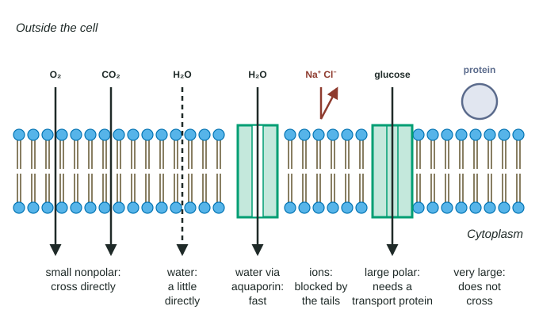

A cell has to let oxygen in and carbon dioxide out, take in sugar and ions, and at the same time keep its proteins, sugars and most ions from leaking away. The plasma membrane manages all of this with one structure: a hydrophobic bilayer that most things cannot cross, fitted with proteins that let particular things through. This page explains which substances cross on their own, which need help, and what the cell wall adds.
Selective permeability
A membrane that lets some substances cross easily and others hardly at all is selectively permeable. This property is what allows a cell to be different from its surroundings: to keep a high concentration of proteins inside, for example, while oxygen passes freely in and out. The membrane's selectivity comes from two things, the chemistry of the bilayer and the proteins set in it.
What crosses the bilayer on its own
The middle of the bilayer is a layer of hydrophobic fatty acid tails. A molecule can diffuse straight through only if it can dissolve in that oily layer. Crossing this way, with no protein involved, is called simple diffusion (Figure 1).

- Small nonpolar molecules, such as oxygen (O₂), carbon dioxide (CO₂) and nitrogen (N₂), dissolve in the hydrophobic core and diffuse across quickly. So do lipid-soluble molecules such as steroid hormones.
- Small polar molecules, such as water, urea and glycerol, cross slowly. They are attracted to water and have to leave it to enter the core.
- Large polar molecules, such as glucose, barely cross at all.
- Ions, such as Na⁺, K⁺ and Cl⁻, are the worst of all, even though they are tiny. A full charge holds a shell of water molecules around each ion, and pulling the ion out of that shell into the oily core takes a great deal of energy.
| Substance | Kind of molecule | Molar mass (g/mol) | Permeability (cm/s) |
|---|---|---|---|
| Carbon dioxide | Small, nonpolar | 44 | about 10⁻¹ |
| Water | Small, polar | 18 | about 10⁻³ |
| Glycerol | Small, polar | 92 | about 10⁻⁶ |
| Glucose | Large, polar | 180 | about 10⁻¹⁰ |
| Sodium ion | Charged | 23 | about 10⁻¹² |
Worked example: comparing powers of ten. How many times faster does water cross a bare bilayer than glucose?
Divide: 10⁻³ ÷ 10⁻¹⁰. When you divide powers of ten, subtract the exponents: −3 − (−10) = 7. So water crosses about 10⁷ times, ten million times, faster than glucose.
Now compare sodium (23 g/mol) with glucose (180 g/mol): 10⁻¹⁰ ÷ 10⁻¹² = 10². Glucose, nearly eight times heavier, crosses a hundred times faster. Charge matters more than size.
Transport proteins
A cell cannot live on simple diffusion alone. It needs ions, sugars and amino acids, and it must get rid of some ions. These cross at useful rates only through transport proteins, membrane proteins that give one particular substance, or a small family of similar ones, a hydrophilic route through the membrane. Each kind of transport protein is specific, so the set of transport proteins a cell makes decides much of what it lets in and out. An intestinal cell that takes up glucose fast after a meal does so because its membrane is packed with transport proteins for glucose.
Water is a special case. Small amounts cross the bilayer directly, but most water crosses through aquaporins, transport proteins that let water molecules pass in single file through a narrow pore. Cells that move a lot of water, such as kidney cells and red blood cells, have many aquaporins.
The experiment that identified aquaporins is a clean test of this idea. Frog oocytes, whose membranes let water in slowly, were injected either with mRNA for the protein or with plain water as a control. The oocytes' ribosomes used the mRNA to make aquaporin, which ended up in their plasma membranes. When both groups were moved into a dilute solution, so that water tended to move in, the controls swelled slightly while the aquaporin oocytes swelled about twelve times faster and burst within minutes. Mercury, which binds aquaporin, slowed the swelling.
Worked example: testing a null hypothesis. The null hypothesis is "aquaporin has no effect on how fast water enters an oocyte." The aquaporin oocytes' volume rose 0.12 units per minute; the controls' rose 0.01 units per minute. A twelvefold difference, repeated across 8 oocytes per group and reduced by an aquaporin blocker, is not what "no effect" predicts. The researchers reject the null hypothesis and conclude that aquaporin speeds water entry.
(How transport proteins work, including channels, carriers and proteins that use energy, is the subject of the next few topics.)
The cell wall
Plants, fungi and most prokaryotes have a cell wall outside the plasma membrane. It is made of different materials in each group:
| Group | Main wall material | What it is |
|---|---|---|
| Plants | Cellulose | Long chains of glucose, bundled into fibers |
| Fungi | Chitin | A polysaccharide of a nitrogen-containing sugar |
| Bacteria | Peptidoglycan | Sugar chains cross-linked by short amino acid chains into one mesh |
| Animals | None | Animal cells have no wall |
The wall is not the barrier that decides what enters; water and small molecules pass through it easily. Its job is mechanical. It gives the cell its shape and protects it from bursting. When a cell's contents are more concentrated than its surroundings, water moves in and the cell swells, pressing outward on the wall. The wall resists stretching and pushes back, so the swelling stops before the membrane tears. An animal cell in the same situation has nothing to stop it and can burst.
This is how penicillin kills bacteria. It blocks the cross-linking of new peptidoglycan, so growing bacteria end up with weak walls. In a dilute fluid, water moves in, the weakened wall gives way, and the cell bursts. If the bacteria are kept in a medium about as concentrated as their own contents, little water enters, and wall-less cells survive as fragile round blobs. Human cells have no peptidoglycan, which is why penicillin can kill bacteria without harming the patient's cells.